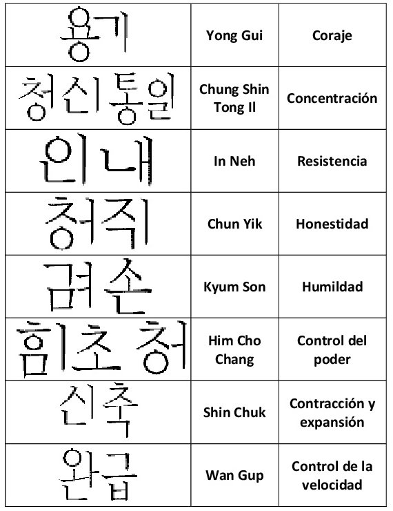

Existen ocho conceptos claves para la práctica del Soo Bahk Do Moo Duk Kwan, y cada uno de estos conceptos tiene un valor fundamental tanto para la práctica en sí misma, como para el desarrollo y crecimiento personal de cada uno de los practicantes de este arte marcial. Estos conceptos se relacionan directamente con el entrenamiento mental.
